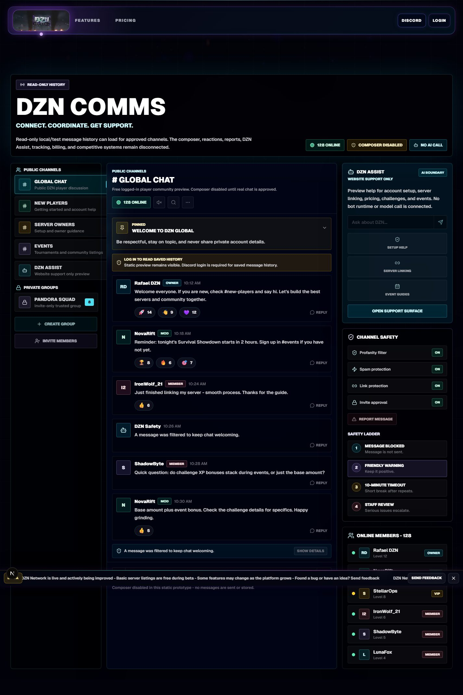
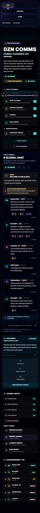
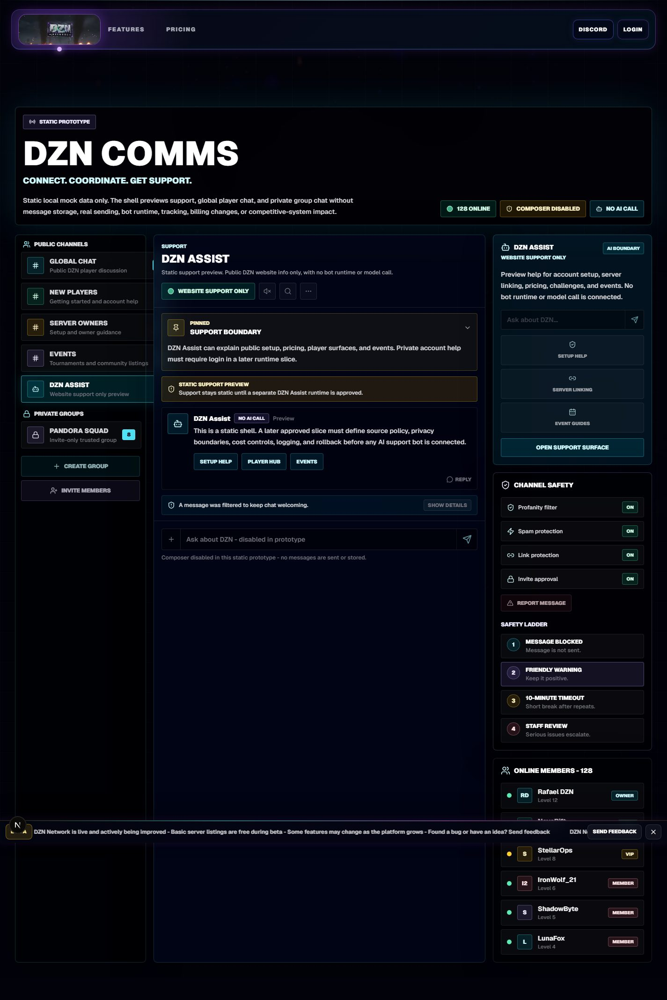
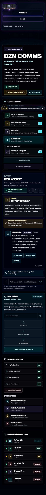

Static Fallback
Client message-history UI flag absent. Static DZN Comms prototype remains visible and no message-history request is made.


This package captures the guarded /community message-history UI with the flag off and on. The enabled states use local/test responses only, and the support surface proves no message-history request is made.
Client message-history UI flag absent. Static DZN Comms prototype remains visible and no message-history request is made.
Client and server local/test flags enabled. The actual local Pages route returns one seeded public-safe message for Global Chat.


Client flag enabled, but the local rendered route receives a 401 unauthenticated message-history response. Static Global Chat remains visible with a login-required fallback.


Client flag enabled, but the local Pages route has no usable local message store. The UI keeps the static fallback.


Client and server local/test flags enabled. The actual local Pages route denies Pandora Squad because no trusted private membership row exists for the mock user.


Support surface selected with the default client flag disabled. DZN Assist remains a static website-support preview and no message-history request is made.


Every protected system remains false/no-effect for this rendered QA package.